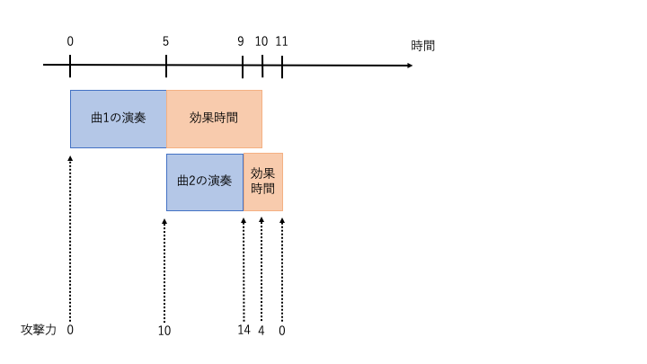
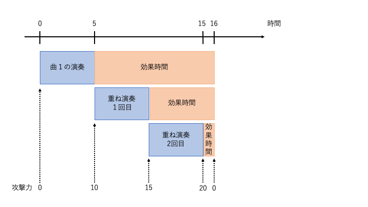

AORイカちゃんはモンスターバスターである.
ある日, 道を歩いていると寝ているモンスターに出会った.
闘争心が強いAORイカちゃんは,モンスターに寝起きの一撃をお見舞いすることに決めた. しかし, 現在のAORイカちゃんの攻撃力は $0$ であり, このままではまともな攻撃ができない.
モンスターバスターの精進をしているAORイカちゃんは, 実は師匠から特殊な笛を託されていた. この笛で特定の曲を吹くと一定時間攻撃力が上がるのである.
修行を積んだAORイカちゃんは $N$ 個の曲を吹くことができる. $i$ 番目の曲は演奏に $R_i$ 秒かかり, 演奏終了後に攻撃力が $A_i$ だけ上昇する. 演奏終了から $T_i$ 秒後にこの演奏の効果は切れ, 演奏前の攻撃力に戻ってしまう.
また, AORイカちゃんは重ね演奏をすることができる. 演奏の効果時間中に同じ曲を演奏し終えると攻撃力が $A_i$ ではなく $W_i$ 上昇する. 重ね演奏は何回でもできるが効果時間は延長しない. そのため現在効果中の $i$ 番目の曲の最初にかけた効果が切れると重ね演奏の効果もすべて切れる.
AORイカちゃんの攻撃力の最大値を出力せよ. なお, いくら演奏してもモンスターは起きないし, AORイカちゃんは $0.5$ 秒で攻撃できる.
入力は以下の形式で与えられる.
$N$
$R_1\ A_1\ W_1\ T_1$
...
$R_N\ A_N\ W_N\ T_N$
AORイカちゃんの攻撃力の最大値を出力せよ. また, 末尾に改行も出力せよ.
2 5 10 5 5 4 4 2
14
2 5 10 5 11 8 8 2 1
20